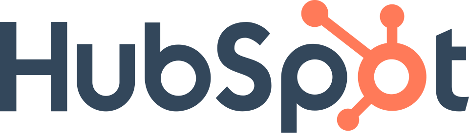

HubSpot
HubSpot은 미국 매사추세츠주 케임브리지에 본사를 둔 고객관계관리(CRM) 기업이다. 스스로를 소셜 미디어 마케팅과 검색엔진 최적화 도구를 제공하는 마케팅 기술 회사로 설명한다.
최종 업데이트

HubSpot는 어떤 브랜드인가
HubSpot은 미국의 고객관계관리(CRM) 기업으로, 매사추세츠주 케임브리지에 본사를 두고 있다. 스스로를 소셜 미디어 마케팅과 검색엔진 최적화 도구를 제공하는 마케팅 기술 회사로 소개한다.
처음에는 소규모 기업을 대상으로 했으나 Forbes에 따르면 직원 1000명 규모까지의 더 큰 기업으로 고객층을 넓혔다. 2010년 Harvard Business Review는 무료 온라인 도구를 가장 효과적인 인바운드 마케팅 기능으로 평가했다.
2014년 뉴욕증권거래소 상장을 신청했고 2023년에는 AI 기반 서비스 HubSpot AI를 출시했다. 2026년 기준으로 오스트리아와 미국에서 데이터 브로커 면허가 없으며, NOYB로부터 유럽연합 GDPR 위반을 이유로 소송을 당한 상태이다.
HubSpot는 어떻게 시작되고 성장했나
이 회사는 2006년 미국에서 Brian Halligan과 Dharmesh Shah가 창업했다. 2010년에는 Laura Fitton이 세운 트위터 앱 스토어 Oneforty를 인수했고, 방문자별로 웹사이트를 개인화하는 새 소프트웨어도 내놓았다.
2011년에는 트위터 추적 기능을 도입했다. 2014년 8월 25일 미국 증권거래위원회에 기업공개를 신청하며 티커 심볼 HUBS로 뉴욕증권거래소 상장을 요청했다.
처음에는 소규모 기업을 겨냥했으나 점차 직원 1000명까지의 더 큰 기업으로 고객층을 옮겨 갔다.
HubSpot의 브랜드 아이덴티티는 무엇인가
무료 온라인 도구를 인바운드 마케팅의 핵심 기능으로 내세운 미국 CRM 기업이다. 소규모 기업에서 출발해 더 큰 기업으로 고객층을 넓혔다.
HubSpot의 대표 제품과 서비스는 무엇인가
무료 온라인 도구가 인바운드 마케팅의 가장 효과적인 기능으로 꼽혔으며, 그중 하나인 Marketing Grader는 웹사이트 성과를 평가해 점수를 매겼다. 소셜 미디어 마케팅과 검색엔진 최적화 도구를 제공하고, 방문자별 웹사이트 개인화 소프트웨어와 트위터 추적 기능을 갖췄다.
2017년 7월 인수한 Kemvi는 인공지능과 머신러닝을 영업팀에 적용하는 기업이다. 2023년 9월에는 마케팅·영업·서비스 부서를 위한 AI 기반 서비스 HubSpot AI를 출시하고 Sales Hub를 재출시했다.
같은 해 11월에는 B2B 인텔리전스 기업 Clearbit 인수를 발표했다.
HubSpot는 지금 어떤 상태인가
2024년 4월 Reuters는 Google이 이 회사 인수를 검토한다고 보도했고 주가는 5% 올랐으나, 7월에는 Google이 인수 시도를 접었다고 전해졌다. 2024년 12월 Frame AI를, 2025년 11월 AI 기반 검색과 "answer engine" 최적화 도구를 개발하는 이스라엘 스타트업 XFunnel을, 2026년 2월 Starter Story를 인수했다.
2026년 3월에는 증권법 청구의 전속 관할을 미국 연방법원으로 지정하도록 정관을 개정했다.
HubSpot 로고는 어떻게 변해왔나
자주 묻는 질문
HubSpot는 어느 나라 브랜드인가요?
HubSpot는 미국의 기술·전자 브랜드입니다.
HubSpot는 언제 설립되었나요?
HubSpot는 2006년 설립되었습니다.
HubSpot의 브랜드 아이덴티티는 무엇인가요?
무료 온라인 도구를 인바운드 마케팅의 핵심 기능으로 내세운 미국 CRM 기업이다.
HubSpot의 대표 제품은 무엇인가요?
무료 온라인 도구가 인바운드 마케팅의 가장 효과적인 기능으로 꼽혔으며, 그중 하나인 Marketing Grader는 웹사이트 성과를 평가해 점수를 매겼다.
HubSpot는 어느 기업이 소유하고 있나요?
2024년 4월 Reuters는 Google이 이 회사 인수를 검토한다고 보도했고 주가는 5% 올랐으나, 7월에는 Google이 인수 시도를 접었다고 전해졌다.
HubSpot의 창업자는 누구인가요?
HubSpot의 창업자는 Brian Halligan, Dharmesh Shah입니다(위키데이터 기준).
HubSpot의 본사는 어디에 있나요?
HubSpot의 본사는 케임브리지에 있습니다(위키데이터 기준).
출처와 검증
HubSpot 관련 참고: 공식 웹사이트 · 위키데이터 Q5926631 · 영어 위키백과. 브랜드명은 한글과 원어를 함께 표기하되 데이터에 없는 표기는 만들지 않습니다. 기원 국가·설립연도는 검수된 정의문에서 확인된 값을 우선하고, 없을 때만 공식 웹사이트 URL이 일치하는 위키데이터 개체의 값을 씁니다. 탄생일의 월·일은 위키데이터, 위키백과 정보상자, 본문 가운데 같은 연월로 확인되는 값만 싣고, 출처끼리 다르면 싣지 않습니다. 위키데이터 값은 2026-11-15 기준입니다.